Проект "Привет, мир!"
Цель: Создать простое мобильное приложение, которое при нажатии на кнопку выводит сообщение "Привет, мир!".
Этот проект поможет познакомиться с основными элементами MIT App Inventor: добавление кнопки (Button) и надписи (Label) на экран, программирование реакции на нажатие кнопки с помощью блоков.
1
Создание проекта
2
Добавление компонентов
3
Программирование кнопки
4
Тестирование приложения
Шаг 1: Создание нового проекта
- Откройте MIT App Inventor.
- Нажмите на кнопку "Create Apps!" 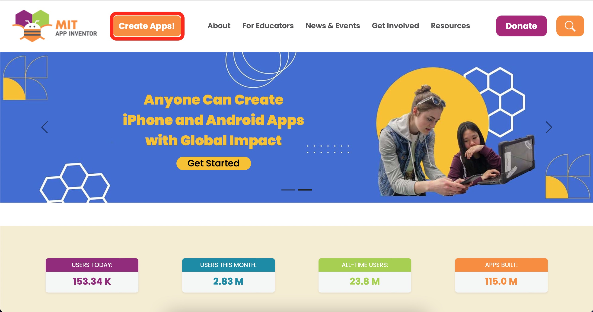
- Войдите в свою учетную запись. 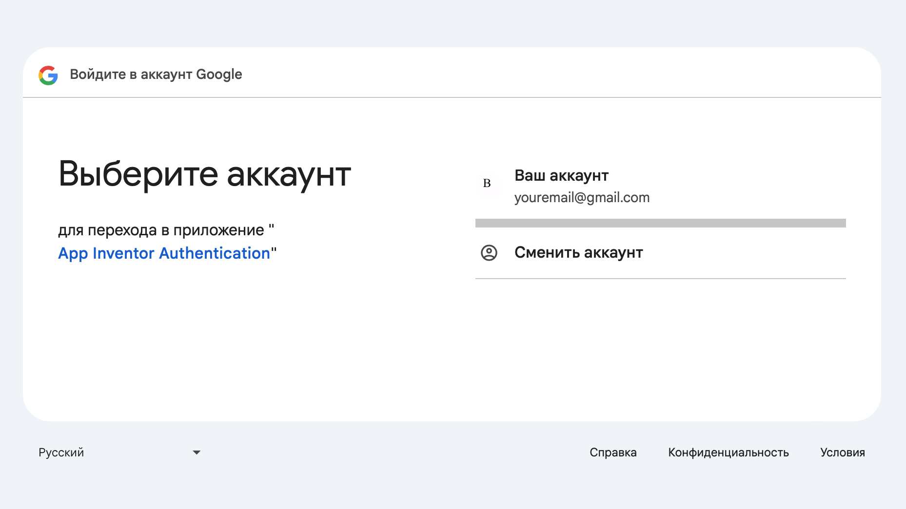
- Выберите "New Project" в верхнем меню. 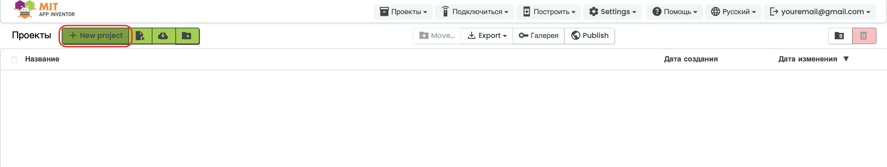
- Введите название проекта "HelloWorld" и нажмите OK. 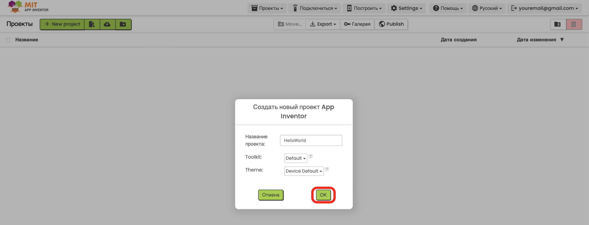
Шаг 2: Добавление компонентов (вкладка Designer)
- В панели компонентов Интерфейс пользователя найдите Надпись.
- Перетащите его на экран смартфона (в визуальном редакторе). 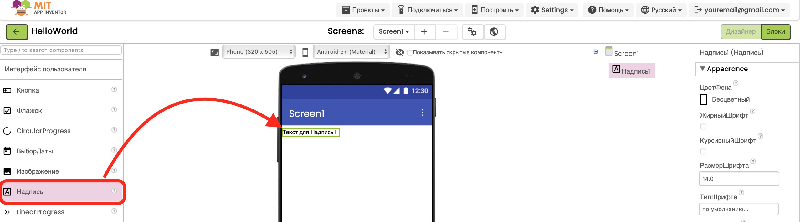
-
В свойствах (Properties) справа можно изменить:
Текст – оставьте пустым (пока ничего не отображается).
РазмерТекста – например, 20 (чтобы текст был крупнее).
ЦветТекста – выберите цвет (например, чёрный или синий).
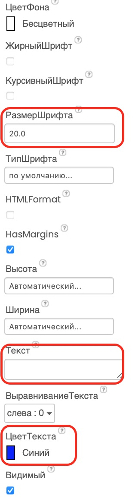
- В панели компонентов Интерфейс пользователя найдите Кнопка.
- Перетащите его на экран смартфона (в визуальном редакторе). 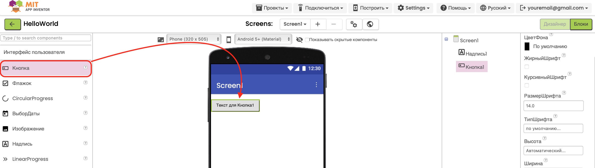
-
В свойствах (Properties) справа можно изменить:
Текст – "Привет!".
РазмерТекста – например, 20 (чтобы текст был крупнее).
ЦветТекста – выберите цвет (например, чёрный или синий).
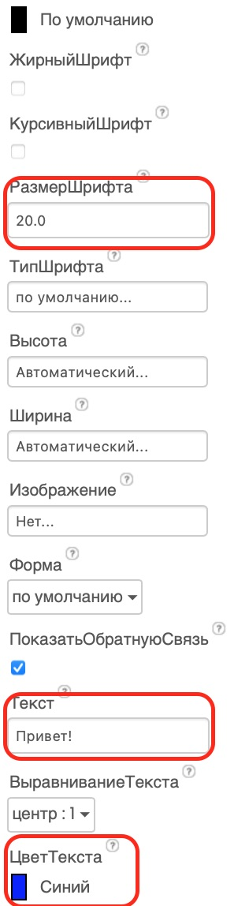

Шаг 3: Программирование кнопки (вкладка Blocks)
- Перейдите на вкладку Blocks. 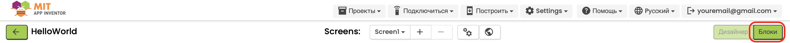
- В левой панели выберите Кнопка1 → нажмите на него и перетащите блок: когда Кнопка1.Щелчок делать 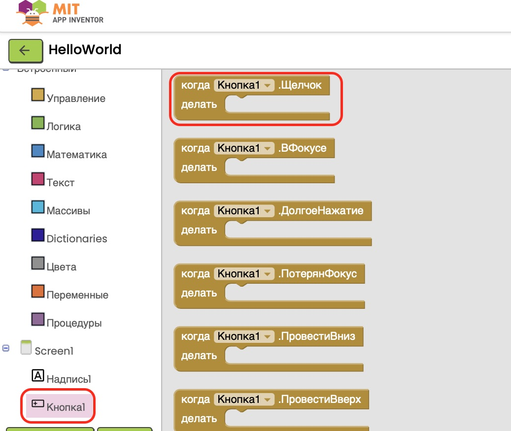
-
Теперь выберите Надпись1 → перетащите блок: присвоить
Надпись1.Текст
Вставьте блок текста (из вкладки Текст) и присоедините его к предыдущим блокам.
Вставьте текст "Привет, мир!" в блок текста.
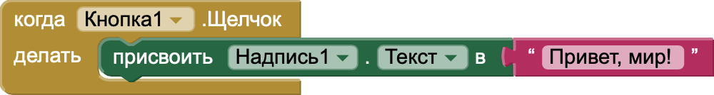
Шаг 4: Загрузка и тестирование приложения
- Для изучения способов загрузки и тестирования приложения перейдите к разделу «Загрузка и установка приложений» на странице «Введение в MIT App Inventor».
- Там подробно описаны все варианты установки и тестирования вашего проекта на мобильном устройстве. 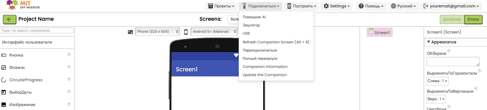